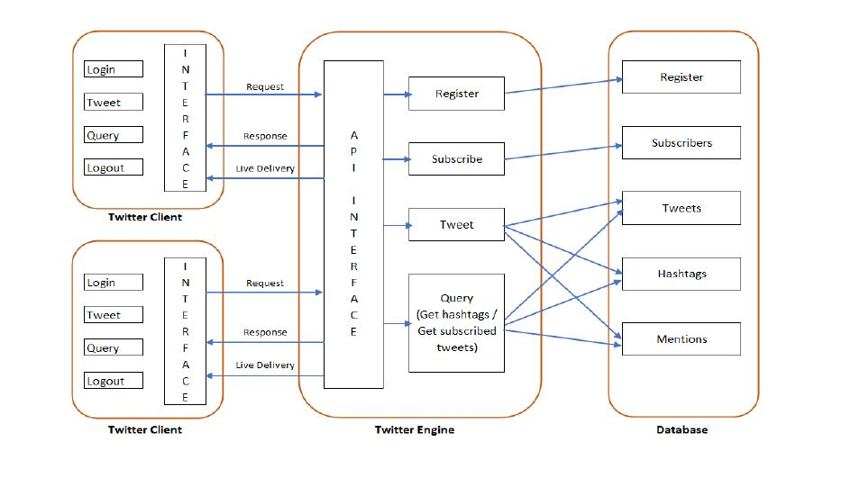
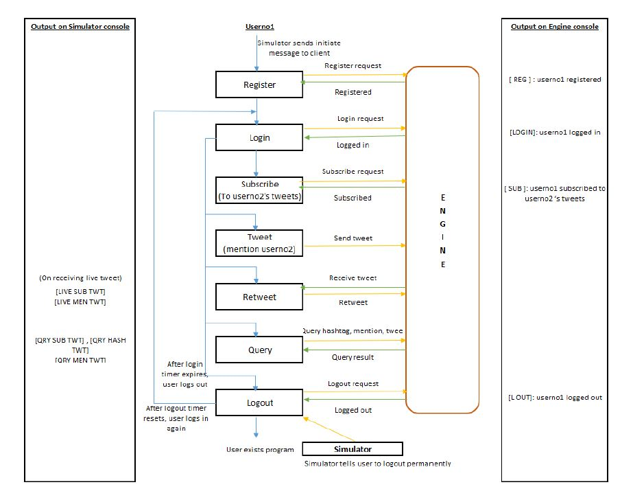
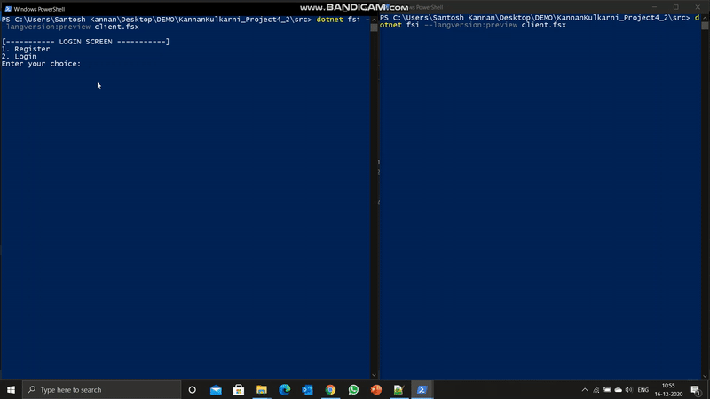
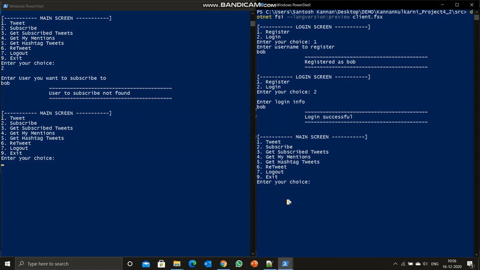

Designing and Implementing twitter ecosystem in F# to support functionality such as tweets, re-tweets, user mentions and user subscriptions, live tweet delivery and hashtag querying. To support large data volumes, database was used instead of in-memory processing.
Technologies Used : F#, Rest APIs, SQLite
Project Timeline : Nov '20 - Dec '20
Approach & Solution
Phase 1 : Mapping out the routes for each functionality.
Designed the architecture for the entire ecosystem

Tables created in Oracle database and data was imported.
Phase 2 : Data model and database creation
Physical data model designed for database
Phase 3 : Configure API endpoints
Distinguished outputs for server and client processes

Decided end point routes for each metric
Built APIs for each metric
Phase 4 : Build F# Command Line Interface
Developed F# based command line UI
Used HTTP requests for fetching data from end points
Phase 5 : Testing
Results
1. Registration and Login (Alice on Left)

2. Tweet Delivered to a subscribed user (Bob on right subscribes to Alice. Tweets sent by Alice are delivered to Bob live)
